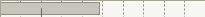
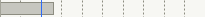
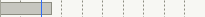
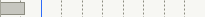
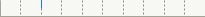

| Source | LogWorth | PValue | |
|---|---|---|---|
| Catalyst Conc | 4.831 |  | 0.00001 |
| Temp | 2.608 |  | 0.00247 |
| Reactor | 2.529 |  | 0.00296 |
| Reaction Time | 1.189 |  | 0.06470 |
| Shift | 0.010 |  | 0.97822 |
| Model | -LogLikelihood | DF | ChiSquare | Prob>ChiSq |
|---|---|---|---|---|
| Difference | 39.437976 | 6 | 78.87595 | <.0001* |
| Full | 17.867716 | |||
| Reduced | 57.305692 |
| RSquare (U) | 0.6882 |
| AICc | 50.9528 |
| BIC | 67.9716 |
| Observations (or Sum Wgts) | 100 |
| Measure | Training | Definition |
|---|---|---|
| Entropy RSquare | 0.6882 | 1-Loglike(model)/Loglike(0) |
| Generalized RSquare | 0.7998 | (1-(L(0)/L(model))^(2/n))/(1-L(0)^(2/n)) |
| Mean -Log p | 0.1787 | ∑ -Log(ρ[j])/n |
| RASE | 0.2349 | √ ∑(y[j]-ρ[j])²/n |
| Mean Abs Dev | 0.1107 | ∑ |y[j]-ρ[j]|/n |
| Misclassification Rate | 0.0700 | ∑ (ρ[j]≠ρMax)/n |
| N | 100 | n |
| Source | DF | -LogLikelihood | ChiSquare |
|---|---|---|---|
| Lack Of Fit | 93 | 17.867716 | 35.73543 |
| Saturated | 99 | 0.000000 | Prob>ChiSq |
| Fitted | 6 | 17.867716 | 1.0000 |
| Term | Estimate | Std Error | ChiSquare | Prob>ChiSq |
|---|---|---|---|---|
| Intercept | 23.426753 | 37.236434 | 0.40 | 0.5293 |
| Temp | -2.6076776 | 1.001375 | 6.78 | 0.0092* |
| Catalyst Conc | -6.2935436 | 2.0614462 | 9.32 | 0.0023* |
| Reaction Time | 0.66909445 | 0.4024643 | 2.76 | 0.0964 |
| Reactor[1] | 1.43348404 | 0.8400676 | 2.91 | 0.0879 |
| Reactor[2] | 0.53800789 | 0.7637796 | 0.50 | 0.4812 |
| Shift[1] | -0.013528 | 0.4957457 | 0.00 | 0.9782 |
| Source | Nparm | DF | L-R ChiSquare | Prob>ChiSq |
|---|---|---|---|---|
| Temp | 1 | 1 | 9.16508615 | 0.0025* |
| Catalyst Conc | 1 | 1 | 18.7687759 | <.0001* |
| Reaction Time | 1 | 1 | 3.41271141 | 0.0647 |
| Reactor | 2 | 2 | 11.6475511 | 0.0030* |
| Shift | 1 | 1 | 0.00074552 | 0.9782 |
| Actual | Predicted Count | |
|---|---|---|
| Outcome | Pass | Fail |
| Pass | 71 | 3 |
| Fail | 4 | 22 |
| Actual | Predicted Rate | |
|---|---|---|
| Outcome | Pass | Fail |
| Pass | 0.959 | 0.041 |
| Fail | 0.154 | 0.846 |